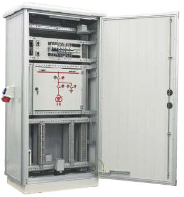

FS wiring cabinets
Wiring cabinets are made based on of SZD enclosures and intended for outdoor use. Electric instrumentation installed inside the cabinets is used for supplying power to and controlling drives of hV and MV power station switches as well as for transmitting data from measuring circuits. As a standard, the plinth of the cabinet is equipped with a firescreen compartment. In addition, it is possible to deliver the cabinet in an option with a special concrete foundation. The cabinet has a basic wiring system designed for:- supplying power to the cabinet’s circuits and transferring it to other cabinets;
- maintaining preset climatic conditions inside the cabinet to ensure correct operation of electric devices;
- providing a lighting system;
- supplying power to one- and three-phase maintenance sockets;
- installing electric gear inside the cabinet, as per customer’s request and in accordance with specifications prepared for a specific facility.
The basic electric circuits of the cabinet are protected by means of RCCbs with overcurrent protection. The cabinet’s heating is provided using two Cirrus 60 heaters, with a power output of 400 W each, controlled by means of a kTO 1140 thermostat with a control range of 0-60 °C. heating is controlled automatically using the thermostat or manually, by means of a special switch located in the control panel. 40 W light fixtures, one on each side of the cabinet, are powered by door limit switches or manually, by means of a switch located in the control panel. The basic wiring system is designed for the operation in the TN-C-S power system. The wiring cabinet meets the requirements listed in the EN 60439-1 standard. 